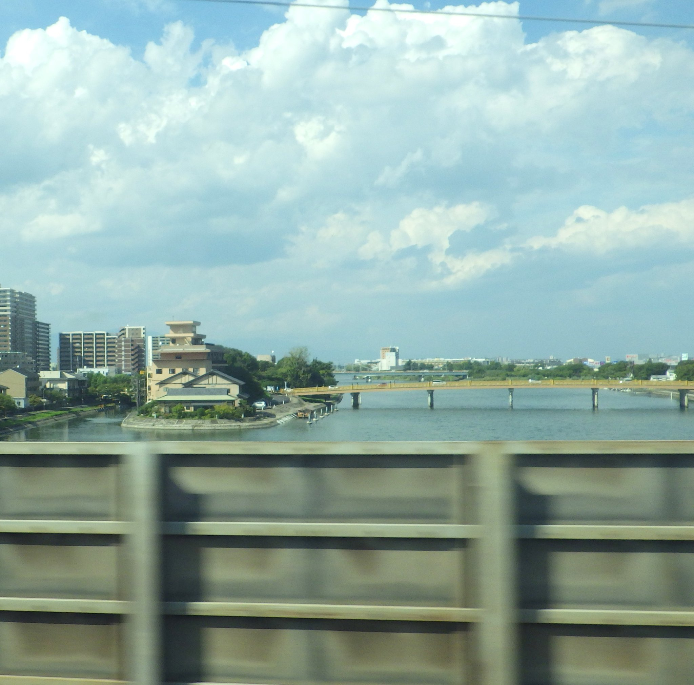
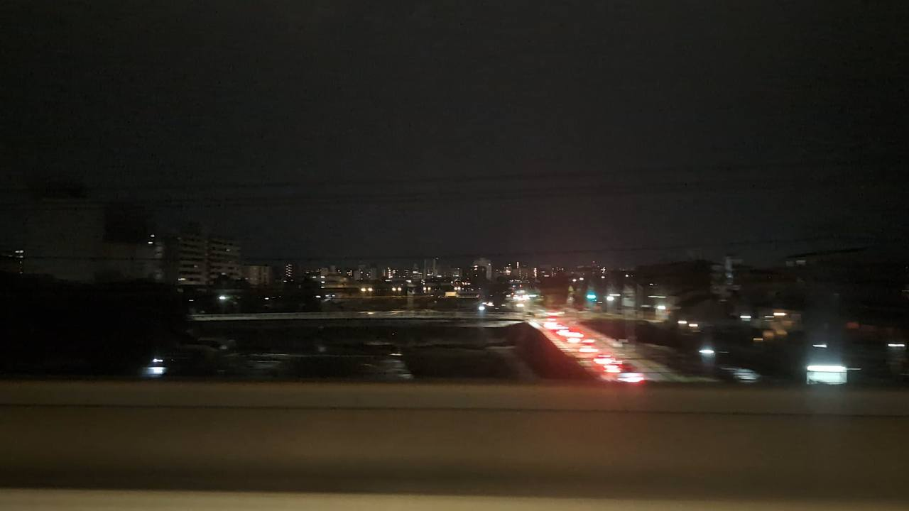

TOKAIDO SHINKANSEN WINDOW VIEW
Can you see Seta no Karahashi Bridge from the Shinkansen?
A bridge before Kyoto.

- Section
- Maibara → Kyoto
- Seat side
- Seat E · mountain side
- Timing
- About 127 minutes after leaving Tokyo on a Nozomi train
- Photos
- 3 photos
How to find Seta no Karahashi Bridge
A little before Kyoto, Seat E may open onto the Seta River and Seta no Karahashi Bridge. It is an old strategic crossing, even appearing in early Japanese chronicles, and is linked to the idea behind the proverb 'more haste, less speed.' It passes quickly, just before Kyoto.
If you are traveling from Tokyo toward Shin-Osaka, start watching the Seat E · mountain side window as you approach Maibara → Kyoto. If you are traveling toward Tokyo, the order is reversed.
Why this view matters
Seta no Karahashi Bridge is one of the window views that make the Tokaido Shinkansen more than a transfer. The train moves fast, so visibility depends on weather, seat position, and timing.
Seta no Karahashi Bridge in photos
